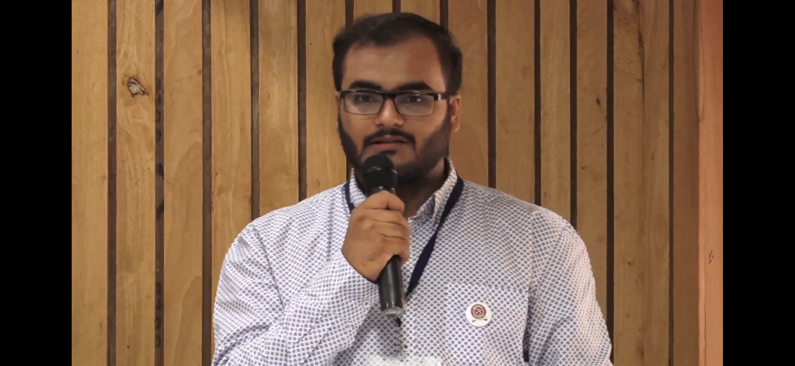

Inventor's Den Pvt Ltd is a new age startup working that is contributing in the sectors of Water Quality Monitoring and Sustainable Additive Manufacturing. The company is focused on creating solutions which can cater to the masses and make the society's lives better.
About Us
Background Story
Startup India Recognized
Inventor's Den is a Startup India DPIIT recognized startup. Incorporated as a Private Limited Company. Their core areas of focus are water quality monitoring and sustainable additive manufacturing.
Certificate no. - DIPP151816

Mission
- Transforming water technology and sustainable additive manufacturing with groundbreaking, cost-effective innovations that drive environmental sustainability.
- Empowering communities with affordable & real-time water quality monitoring solutions.
- Reducing plastic waste in significant quantities, through advanced recycling technologies.
- Making sustainable 3D printing widely accessible.
Vision
- To become a global leader in sustainable technology by pioneering innovative solutions in water quality management and plastic recycling.
- To build a future where clean water is accessible to everyone.
- To up-cycle the abundant plastic waste.
- To contribute towards a greener & more sustainable planet.
Our Leadership

Aditya Upadhyay, a visionary innovator and entrepreneur, is the driving force behind Inventor's Den Pvt Ltd. A Gold Medalist in Mechanical Engineering, he envisions a future where technology drives sustainability & water preservation.
Beyond entrepreneurship, Aditya is a passionate speaker and educator, often delivering guest lectures. Committed to lifelong learning, he finds inspiration in reading and wildlife exploration. He advocates mindful getaways, urging others to pause, reflect, and reconnect with their purpose.